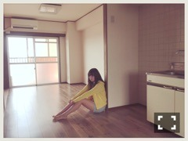

| 2016/04 28 Thu | ひめたん-0o0-その632 |

◯週刊ヤングチャンピオン
現在発売中のヤンチャンにて
表紙&巻頭グラビア
載せて頂いてます！
初の単独表紙～＊
ひめたん夢が叶いました(´,,•ω•,,｀)
皆さん是非チェックして下さいませ
ポスターとクリアファイルもついてくるよ！
◯ラジオ番組表2016春号
これもまた嬉しい（ ; ; ）
私、愛読書に載ってしまいました！
ラジオについてお話させていただいたり
らじらー！のスタジオの様子も
お写真撮っていただいていたりします
乃木坂ちゃんのラジオ今年また増えたし
おうちに一冊あると便利ですよ～
良かったら見てみて下さい！
嬉しい報告が２つもできて
中元、幸せです（ ; ; ）
というかこの4月は本当に
何が起こったんだろうってくらい
たくさんの雑誌に掲載して頂きました
ありがたやありがたや（ ; ; ）
いろんな雑誌のオフショット
まだまだあるから
気が向いたら載せるね～

書きながら気が向いた。気分屋。
さて、明日明後日は
名古屋で握手会です！
会いに来て下さる皆さん
よろしくお願いします( ˆωˆ )
金曜日の全国握手会では
ろってぃーとペアです♡
ろってぃーファンの皆様
ひめたんとも1日仲良くして下さいませ。
ひめたんファンのみんな、待ってるよ！
個別握手会は5部までいるよ！
いろんなお話できたらいいな～
2日間楽しみにしてるね。
私今年に入ってから
結構な頻度で名古屋お邪魔してる気がする
月1以上は来てる気がするo(^o^)o
日曜の夜は、らじらー！サンデー
ゲストは声優アーツに三森すずこさん
乃木坂46から星野みなみちゃんです！
募集中のメールテーマはこちら
◯みなみちゃんへのメッセージ
◯僕の妹はNo.1対決
◯オリひめトークセッション
◯ひとりノリひめたん
皆さんからのメール
お待ちしてます( ˇωˇ )
おたよりの宛先はこちら
放送中にTwitterも見てます！
#nhkらじらー をつけて
是非ツイートしてくださいね。
～お知らせ～
4/30 月刊エンタメ
5/5 発掘！お宝ガレリア
5/8 BOMB
乃木恋がいよいよ
配信スタートしたんですね。
皆さんもうプレイしてますか？
感想聞かせてください(´,,•ω•,,｀)
メンバーごとにストーリー違うんだよ！
もちろんひめたんのことも
可愛がってあげて下さいね(´,,•ω•,,｀)

2ndアルバム「それぞれの椅子」
ジャケ写公開されました～
3rd Birthday LIVEが
映像化されるらしいです！
NOGIBINGO!6観てね！
#3はNOGIROOMにも参加してます
Huluの方で観てね。
ちーちゃん愛してるよー♡
(＊´・ω・＊)
コメント(713)
2016/04/28 23:24